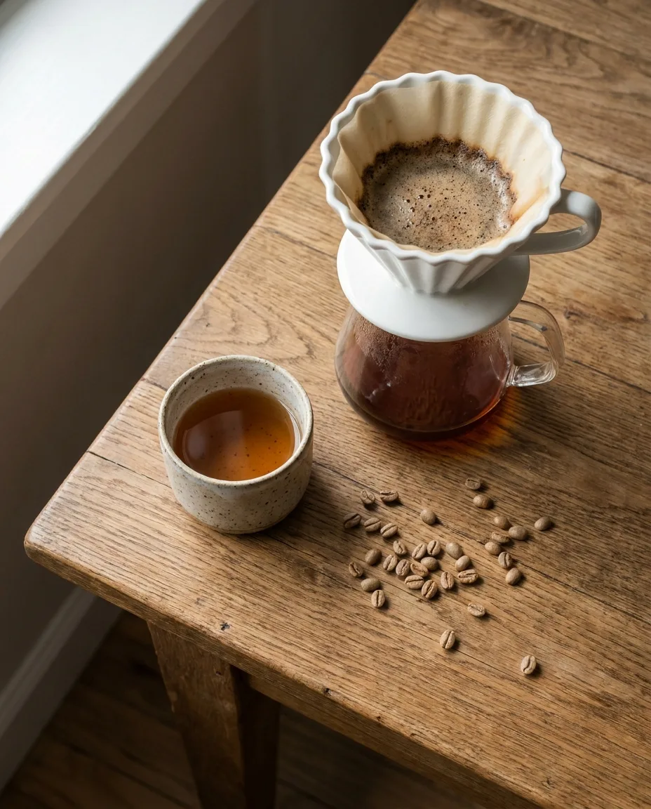
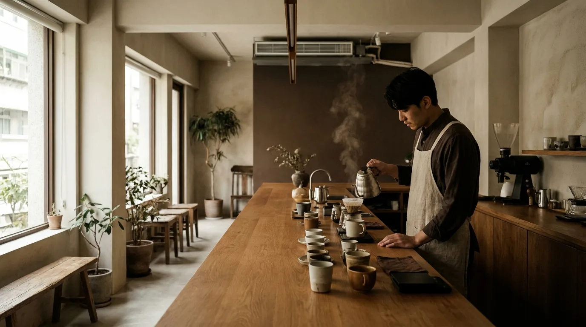
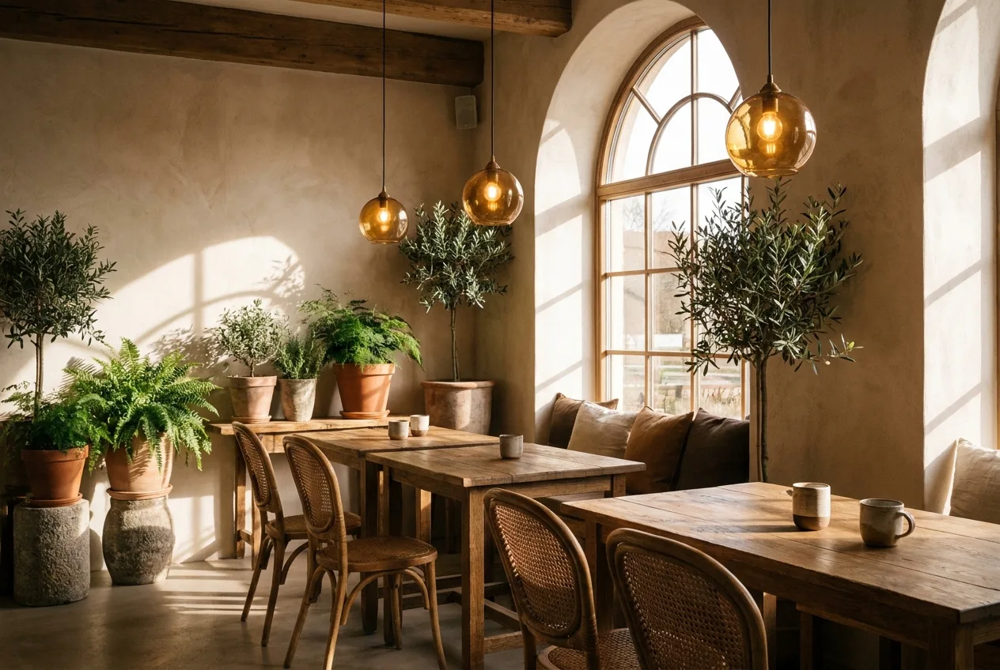

SINGLE ORIGIN
單品手沖
嚴選單一產區生豆，以手沖呈現產地風土。淺焙花香、中焙堅果、深焙巧克力，任您探索。
NT$160 起


木，是空間裡溫潤的觸感；序，是咖啡從種植、烘焙到萃取的時間秩序。
我們相信好咖啡需要被耐心對待。每一支豆子在烘焙後靜置養豆，待風味穩定才登上吧台；每一杯手沖都以秤重、控溫、計時嚴謹萃取。在木序，您喝到的不只是一杯咖啡，而是一段被細心記錄的時光。
每週小批量烘焙，從淺焙的明亮果酸到深焙的醇厚甘苦，皆出自店內烘豆師之手。
依豆款特性調整水溫與注水節奏，讓每支單品都展現它最完整的風味輪廓。
無論您偏好細緻的單品、濃郁的義式，或想把風味帶回家，木序都為您準備好了。

嚴選單一產區生豆，以手沖呈現產地風土。淺焙花香、中焙堅果、深焙巧克力，任您探索。
以木序配方豆萃取濃縮，搭配綿密奶泡。拿鐵、卡布、Flat White，杯杯講究比例與溫度。
將店內風味帶回家。半磅裝新鮮烘焙豆，附沖煮建議卡，可選研磨粗細。
與產地莊園直接溝通，挑選具地域特色、處理乾淨的精品生豆。
小批量烘焙並記錄曲線，依豆性決定下豆時機，鎖住最佳風味。
烘焙後靜置 24–48 小時排氣熟成，讓風味沉穩、層次完整。
秤重控溫、精準計時，在您面前手沖，呈現一杯有溫度的咖啡。
「淺焙耶加雪菲是我每週的儀式。明亮的柑橘香氣，配上店裡安靜的木頭味道，整個人都被熨平了。」
「買過幾次他們的自家烘焙豆回家沖，新鮮度跟風味都很穩定，附的沖煮卡對新手超友善。」
「帶客戶來談事情，環境舒服、咖啡有水準，拿鐵的奶泡綿密又不會太甜，很有質感的一間店。」